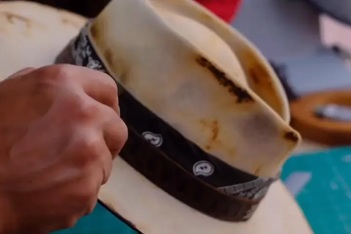
«Los sombreros no se botan.»
Restauramos y rediseñamos el tuyo, o el que heredaste.
Escríbenos para restaurar tu sombrero →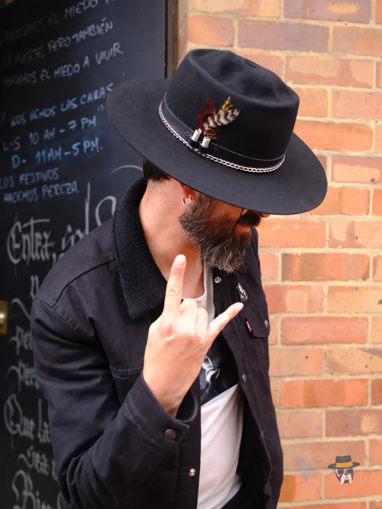
Sombrerería artesanal · Bogotá, Colombia ®
Sombreros hechos 100 % a mano en Bogotá. Uno por uno, a la medida de tu cabeza y de tu historia.
Hormas clásicas que hacemos a tu medida, en el fieltro, el color y la cinta que elijas.
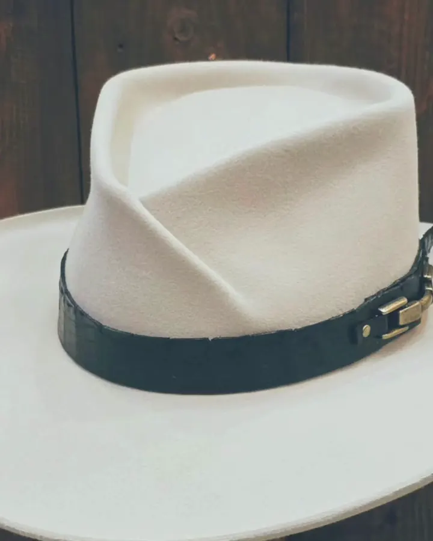
N.º 01
«Me llaman Detroit Hook y no soy una horma antigua de fábrica.»
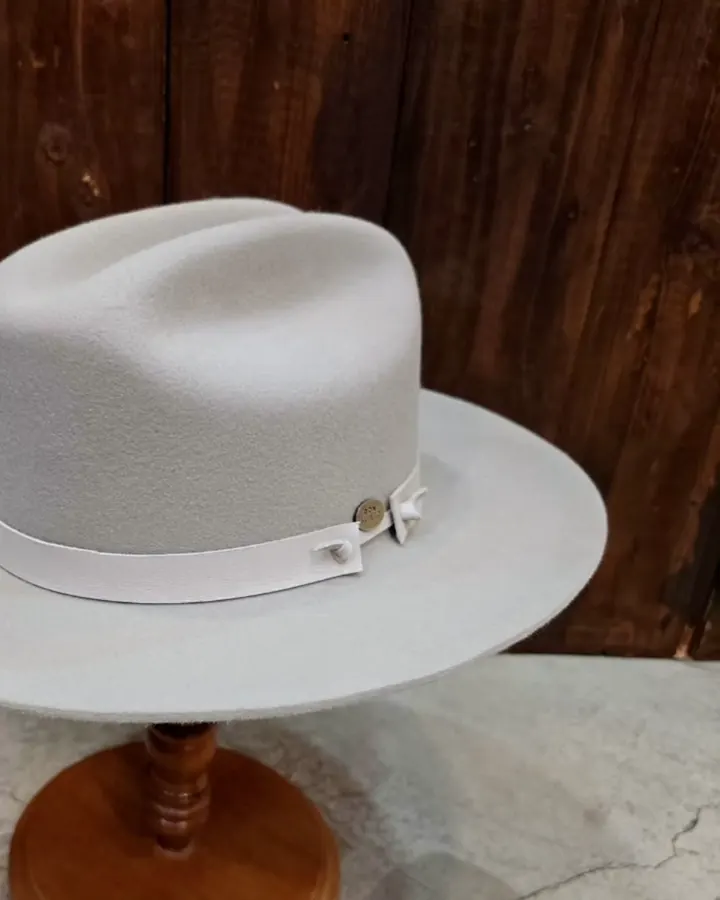
N.º 02
«Me llamo Open Road y nací en la época de las carreteras sin fin.»
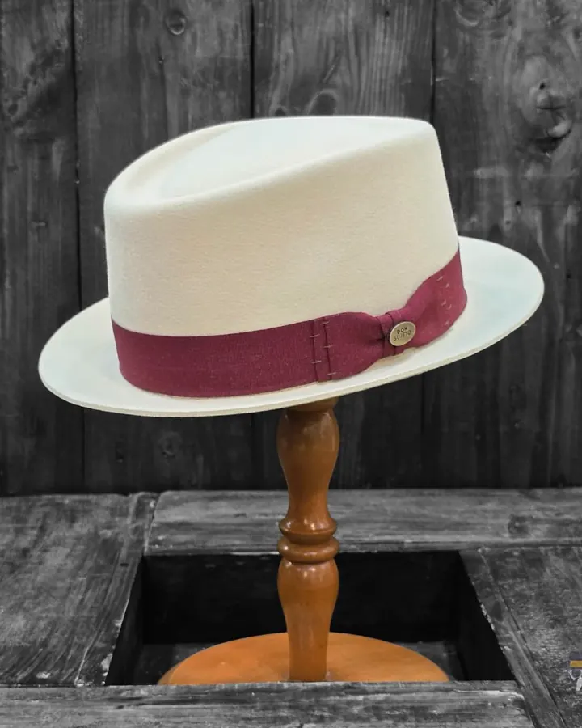
N.º 03
«Si no sabes por dónde empezar a usar sombrero, empieza por mí.»
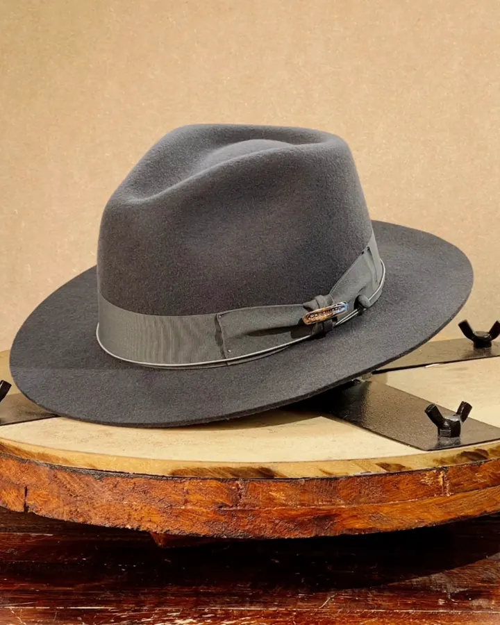
N.º 04
«Clásica, sí. Vieja, nunca.»
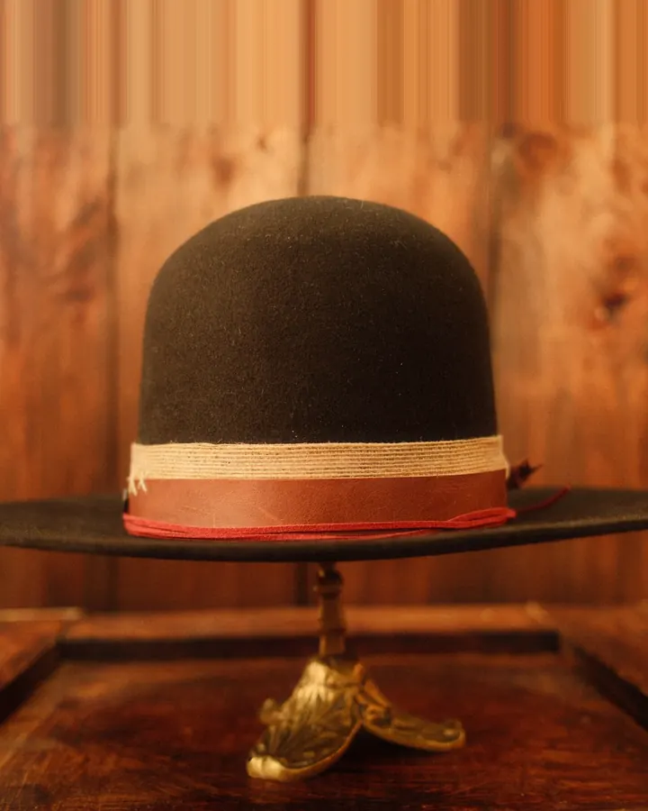
N.º 05
«Lo clásico no tiene vigencia.»
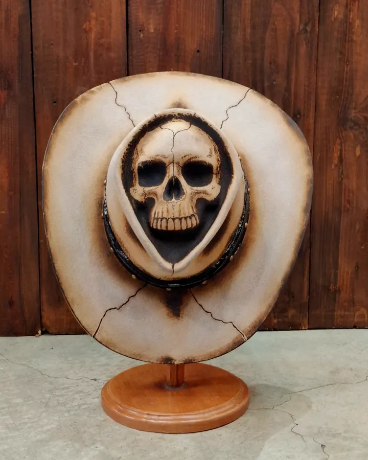
N.º 06
«Las calaveras no fallan.»
¿No ves el tuyo? Lo creamos desde cero.
Cuéntanos tu ideaSujeto a medida
Por WhatsApp o en la tienda: tu idea, tu estilo, la ocasión. Conceptualizamos la pieza contigo.
Tomamos tu medida y definimos horma, copa y ala según tu estatura; eliges fieltro, color y cinta.
Hormado, vapor, lija, color y costura: todo el sombrero se hace a mano en nuestro taller.
Lo recoges en la tienda o te lo enviamos.

Restauramos y rediseñamos el tuyo, o el que heredaste.
Escríbenos para restaurar tu sombrero →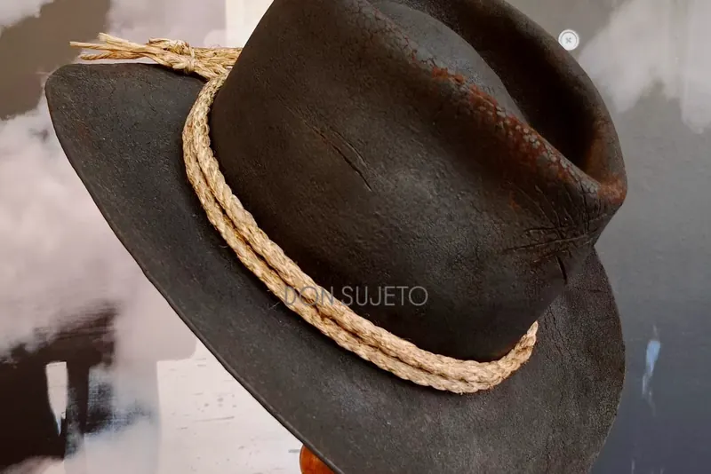
Réplicas de sombreros icónicos del cine, las series y los videojuegos, ajustadas a tu medida.
Escríbenos para pedir una réplica →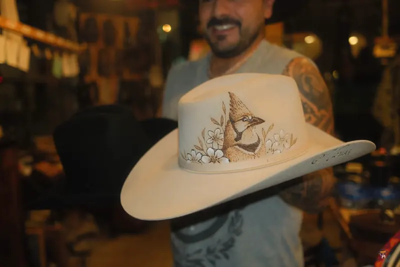
Calaveras, pirograbado y piezas intervenidas por artistas.
Escríbenos para una pieza personalizada →Hecho a mano, del hormado a la última costura.
Hecho para una sola cabeza.
Fieltro de pelo de castor y conejo, tafilete en cuero, forro en satín.
Marca registrada. Hecho en Colombia, por colombianos.
El taller
Don Sujeto es una sombrerería de Bogotá donde cada pieza se hace 100 % a mano, de principio a fin. No trabajamos rápido: trabajamos al detalle.
Un sombrero es una extensión de tu personalidad. Por eso cada uno cuenta una historia. ¿Cuál es la tuya?
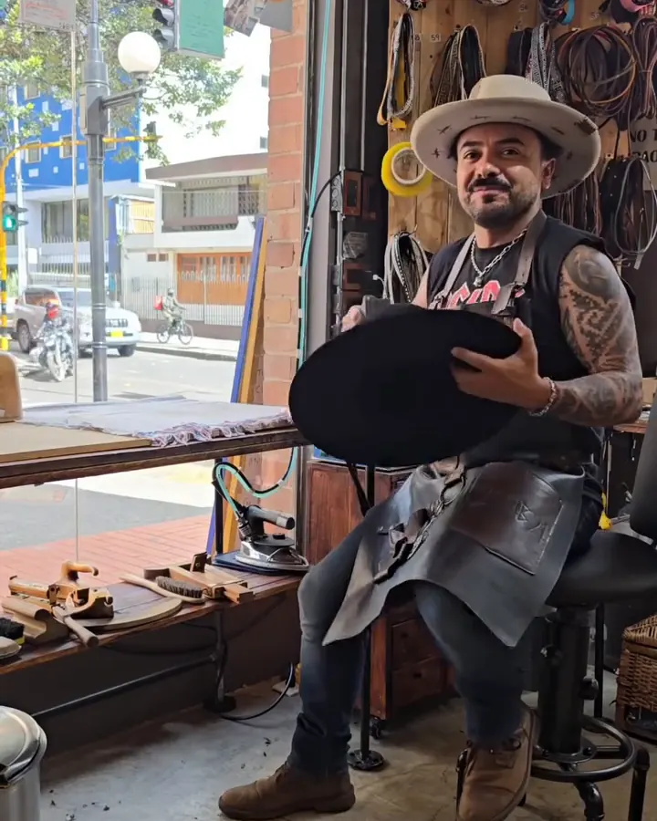
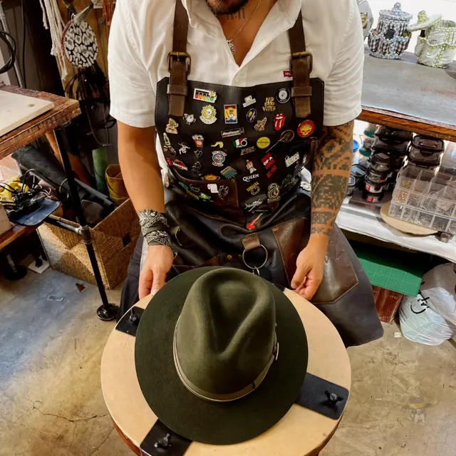
«No se trata de rapidez, se trata de detalle.»
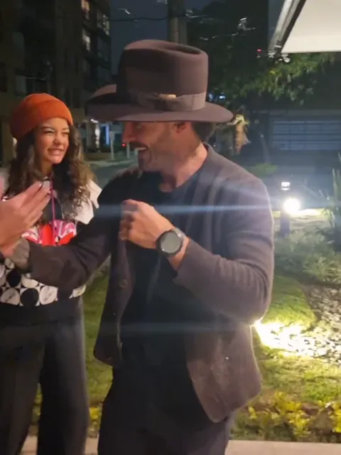
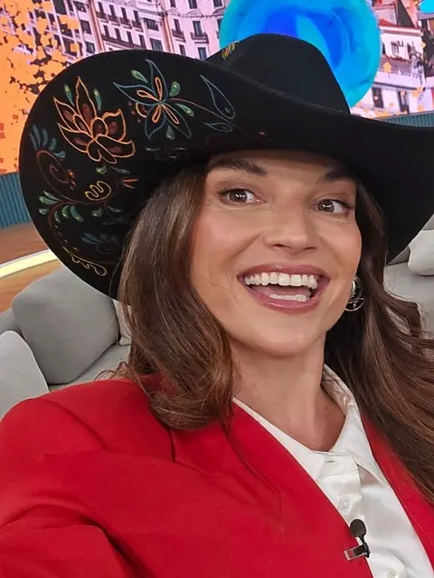
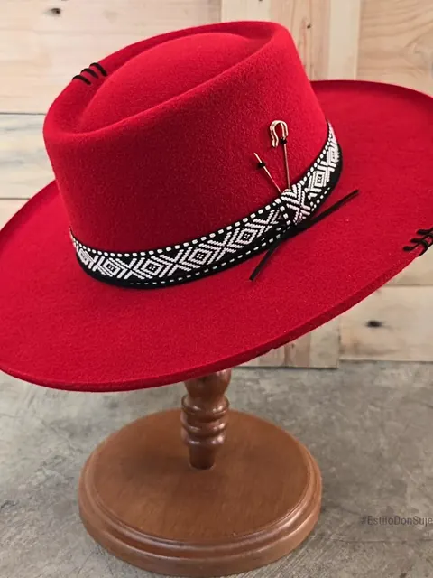
[Reseña real 1]
[Reseña real 2]
[Reseña real 3]